Final Project
This project focused on the development of a smart wristband designed to support people with visual impairment during daily mobility. The wristband uses an ultrasonic sensor to detect nearby obstacles and activates a vibration motor whenever an object is detected within a predefined distance.
The project integrates product design, electronics, PCB manufacturing, programming, 3D printing, and IoT monitoring through the Blynk platform, resulting in a functional assistive technology prototype.
Copper board, PCB design, soldering iron, tin solder, drill bits, cutting tools and cleaning materials.
HC-SR04 ultrasonic sensor, vibration motor, XIAO ESP32-C3, resistors, connectors, jumper wires, rechargeable battery and breadboard.
TPU filament, nylon, printed wristband case, PCB holder, battery compartment and Prusa 3D printers.
Arduino IDE, KiCad, USB-C cable, multimeter, soldering station and Blynk IoT platform.
The first phase consisted of identifying the main mobility needs of people with visual impairment. For this purpose, a QFD matrix was developed to connect user requirements with technical characteristics of the product.
The analysis considered important aspects such as obstacle detection range, vibration intensity, wristband comfort, device weight, battery autonomy, component distribution and ergonomic design.
This phase allowed the team to define the most relevant design priorities before starting the physical and electronic development of the smart wristband.
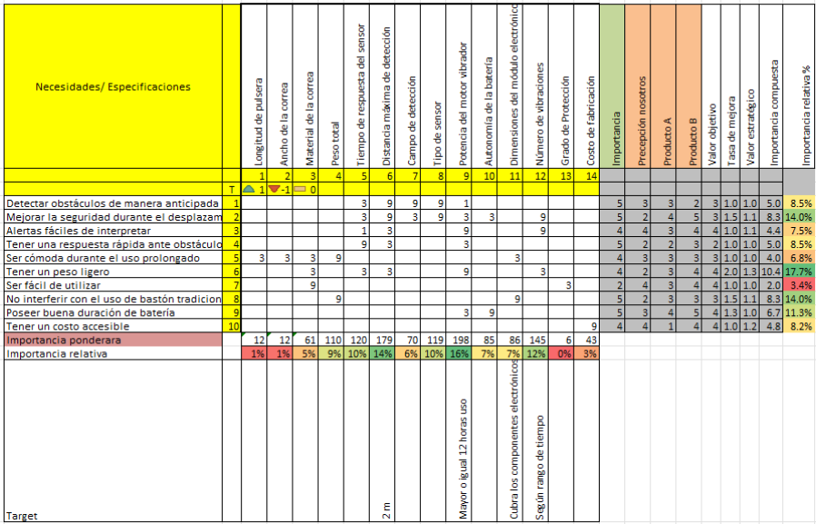
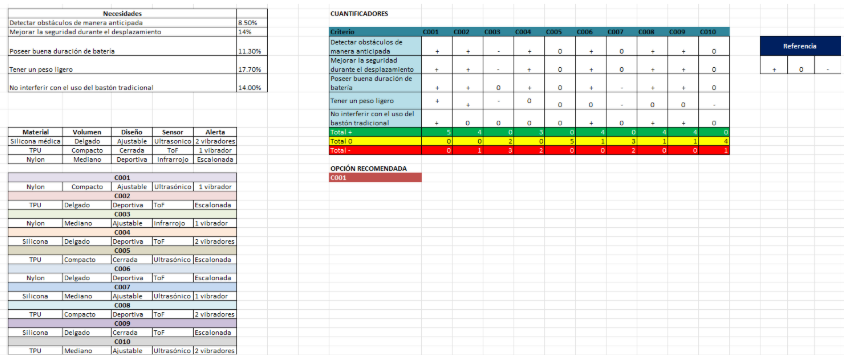
In this phase, several manual sketches were created to explore different wristband shapes, sensor positions and internal component layouts.
The sketches helped define the possible location of the HC-SR04 ultrasonic sensor, the XIAO ESP32-C3 microcontroller, the vibration motor, the rechargeable battery and the PCB inside the wristband structure.
This stage was important because it allowed the design to be evaluated before moving to CAD modeling, reducing possible errors in size, comfort and assembly.
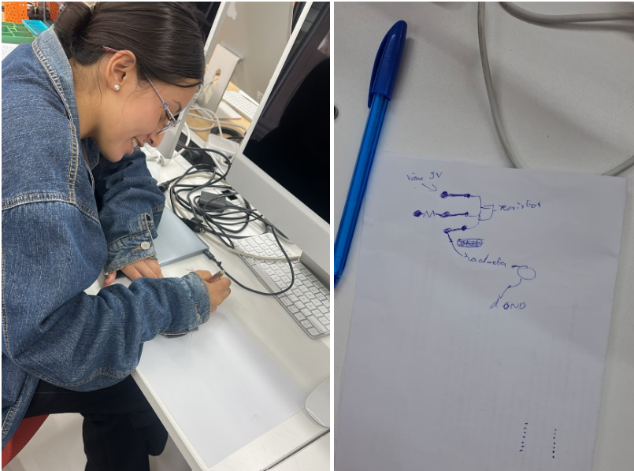
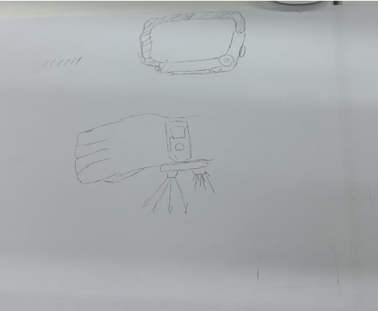
Before manufacturing the final PCB, the electronic system was assembled on a breadboard to verify the behavior of the circuit. The components used in this phase included the XIAO ESP32-C3 microcontroller, HC-SR04 ultrasonic sensor, vibration motor, resistors, jumper wires, connectors and a rechargeable battery.
The ultrasonic sensor was connected to the microcontroller to measure the distance between the user and nearby obstacles. The vibration motor was activated when the detected distance was lower than the programmed safety limit.
During this stage, the polarity of the components, the sensor readings, the motor response and the stability of the power supply were tested. This helped identify wiring errors before moving to the permanent PCB assembly.
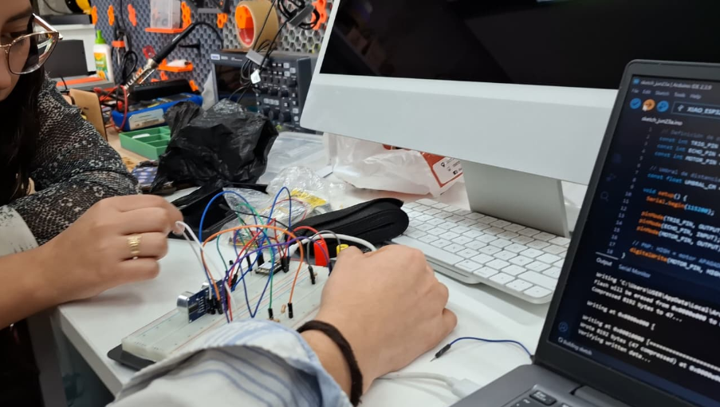
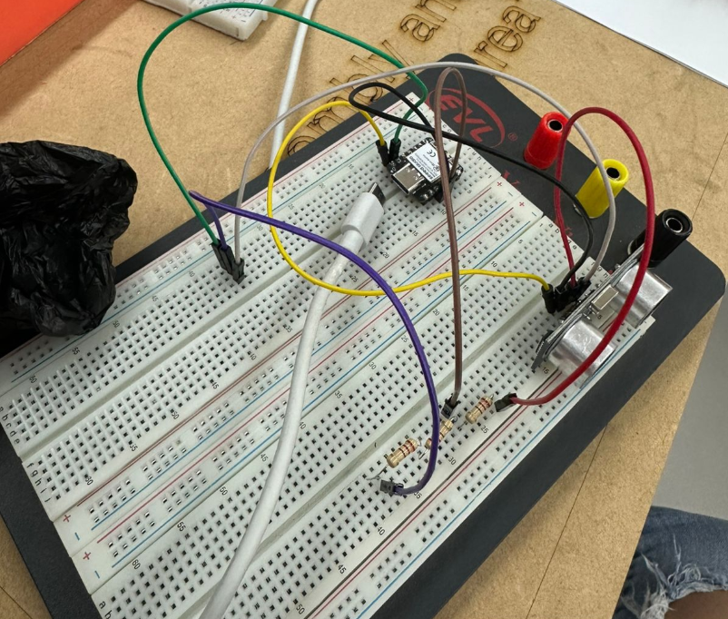
The programming phase was carried out using Arduino IDE and a USB-C cable to upload the code to the XIAO ESP32-C3 microcontroller.
The code was developed to continuously read the distance values from the HC-SR04 ultrasonic sensor. When an obstacle was detected within the defined safety range, the microcontroller sent a signal to activate the vibration motor.
Several tests were performed to adjust the detection distance, improve the response time and verify that the vibration alert worked correctly. This phase allowed the electronic system to respond automatically to nearby obstacles.
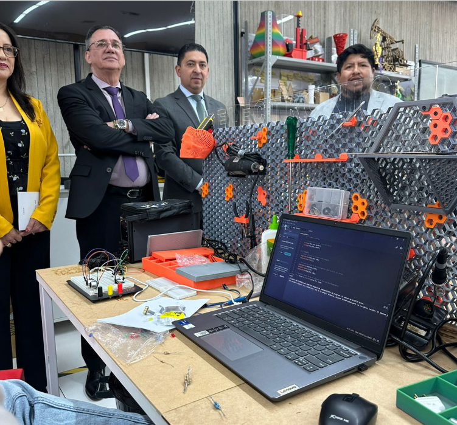
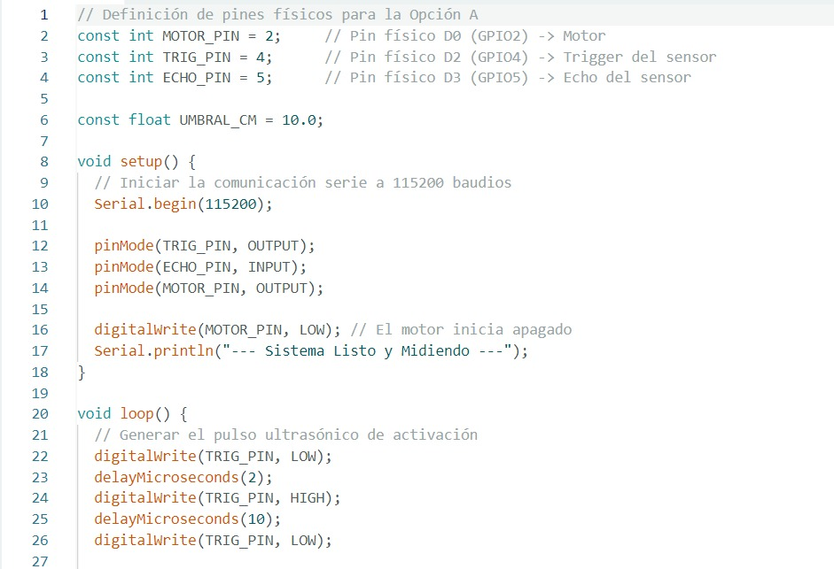
After validating the electronic circuit and the program, the PCB and the wristband structure were designed according to the dimensions of the real components.
KiCad was used to design the PCB layout, organizing the connections between the XIAO ESP32-C3, the ultrasonic sensor, the vibration motor, resistors, connectors and power supply. The objective was to replace the temporary breadboard circuit with a compact and organized board.
At the same time, the wristband case was designed considering the internal space required for the PCB, battery compartment, sensor opening and motor placement. The design focused on comfort, stability and easy assembly.
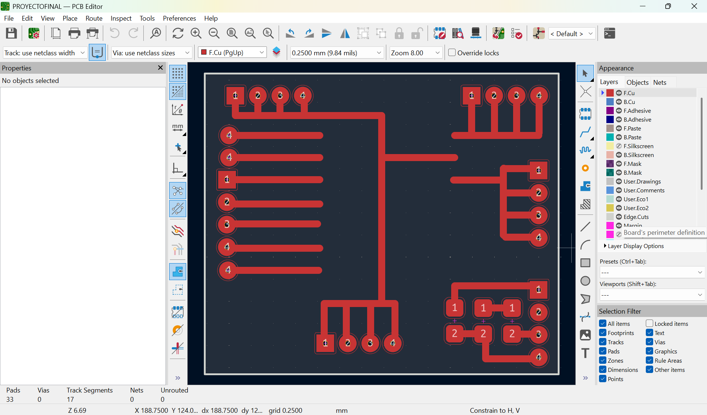
The PCB manufacturing process began with the preparation of the circuit design created in KiCad. The final PCB file was exported and prepared for fabrication according to the required dimensions of the wristband.
A copper board was used as the base material for the printed circuit. The PCB outline was cut using a UV laser machine, allowing the board to match the required shape and size for the prototype.
After cutting, the board was drilled in the points where the electronic components had to be inserted. Drill bits were used carefully to create the holes for the connectors, microcontroller pins and sensor connections.
This phase transformed the electronic design into a physical board, ready for soldering and integration into the final wearable prototype.
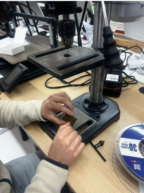
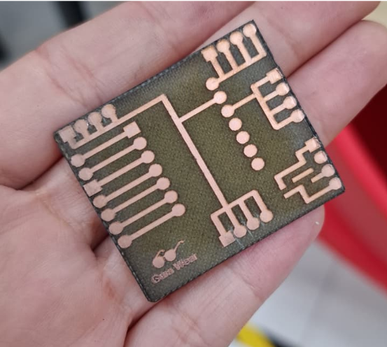
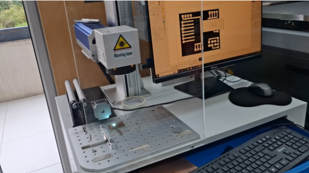
Once the PCB was manufactured, the electronic components were placed on the board according to the circuit layout. The components included the XIAO ESP32-C3 microcontroller, HC-SR04 ultrasonic sensor connections, vibration motor, resistors, connectors and power lines.
A soldering iron and tin solder were used to attach each component to the PCB. Special care was taken to avoid excess solder, short circuits or weak joints that could affect the operation of the circuit.
After soldering, a multimeter was used to perform continuity tests and verify that the connections were correct. This step was necessary before installing the PCB inside the wristband case.
Compared with the breadboard prototype, this assembled PCB provided a more stable, compact and reliable electronic system.
Compared with the breadboard prototype, this version provided a much more stable, reliable and compact electronic system.
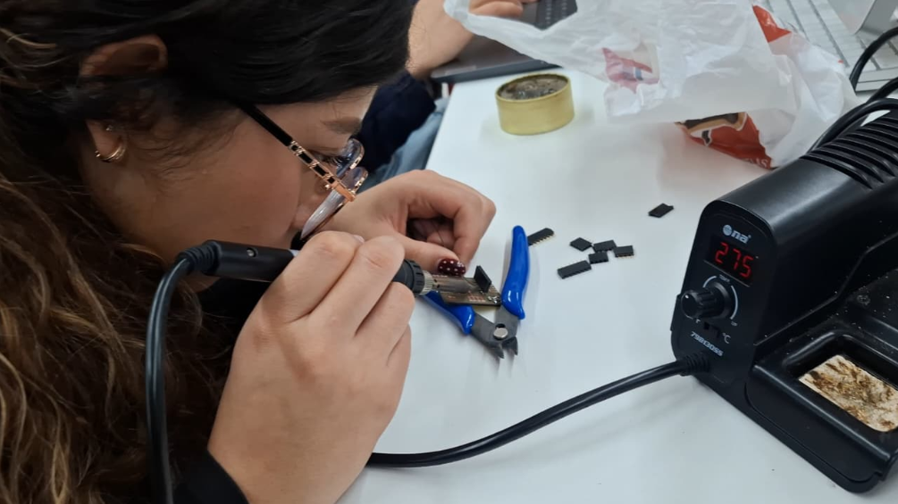
The physical structure of the wristband was manufactured using 3D printing. The case was designed to hold the PCB, rechargeable battery, vibration motor and ultrasonic sensor securely inside the prototype.
Flexible TPU filament was used for the wristband section to improve comfort when worn on the wrist. Nylon and printed support pieces were also considered for parts that required greater resistance or stability.
The model was printed using Prusa 3D printers. After printing, the pieces were checked to verify the fitting of the PCB holder, battery compartment, sensor opening and cover.
This phase produced the physical body of the smart wristband, allowing the electronic system to be installed in a wearable and ergonomic structure.
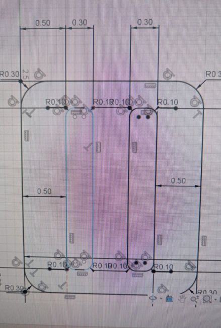
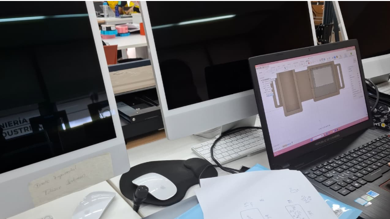
To add IoT functionality to the prototype, the XIAO ESP32-C3 was connected to the Blynk platform through Wi-Fi. This allowed the system to send obstacle-distance data to a digital dashboard.
The Blynk mobile dashboard was configured to display the distance values measured by the HC-SR04 ultrasonic sensor in real time. Graphs were also generated to observe how the distance changed during testing.
This phase made it possible to monitor the behavior of the wristband digitally, evaluate the performance of the sensor and collect information that could be used for future improvements of the device.
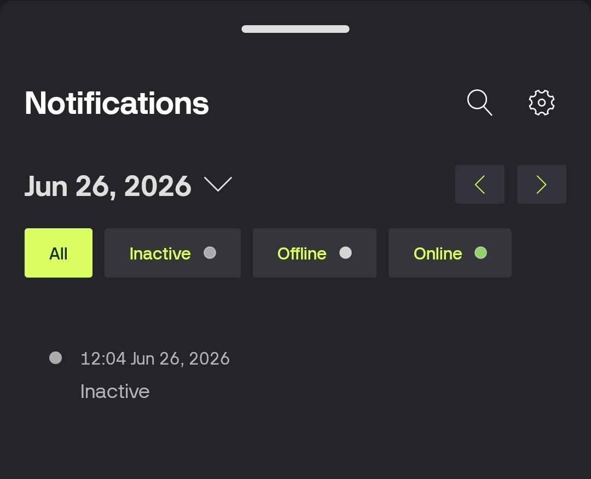
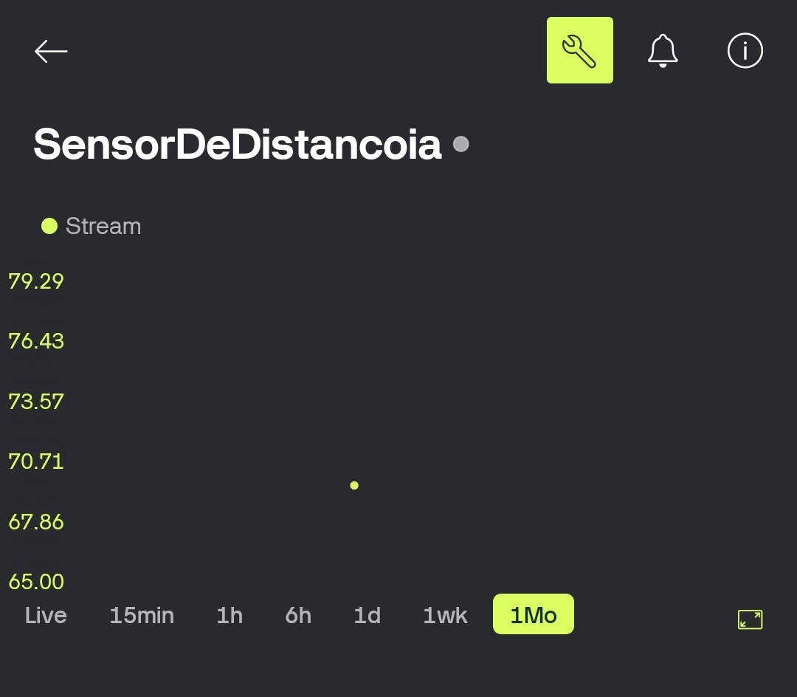
During the final assembly phase, all the developed parts were integrated into a single functional prototype. The manufactured PCB was installed inside the 3D printed wristband case together with the ultrasonic sensor, vibration motor and rechargeable battery.
The sensor was positioned at the front of the wristband to detect nearby obstacles, while the vibration motor was placed in a position where the user could clearly feel the alert.
Several functional tests were performed to verify the obstacle detection range, vibration response, electronic stability and correct data transmission to the Blynk platform.
The final prototype successfully detected nearby obstacles and notified the user through vibration feedback, fulfilling the main objective of the smart wristband project.
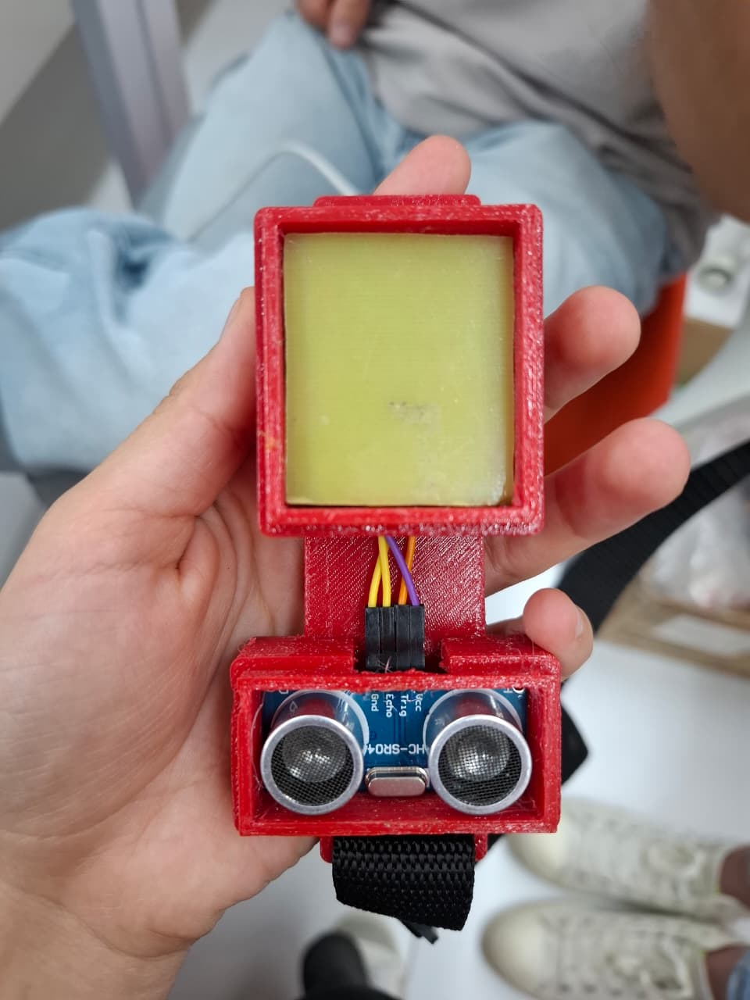
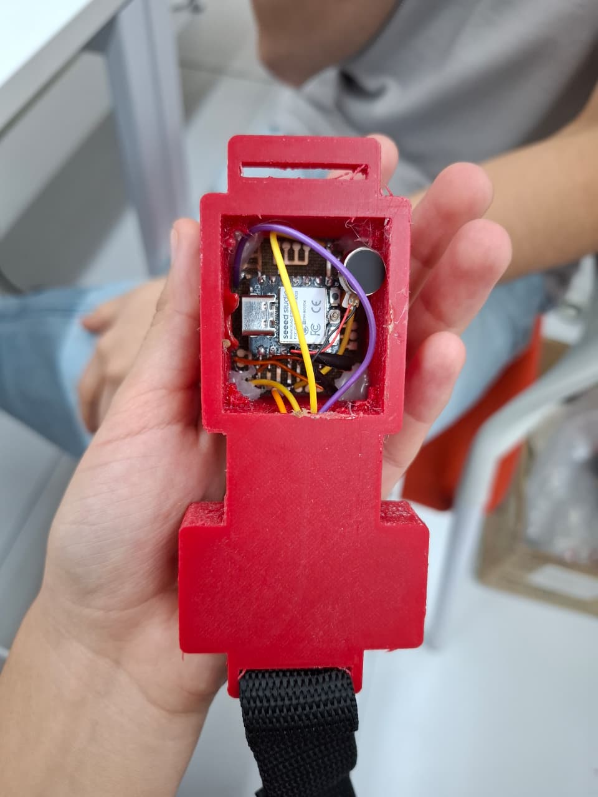
The final outcome of this project is a fully functional smart wristband capable of detecting nearby obstacles using an ultrasonic sensor and notifying users through vibration feedback.
The prototype successfully combines product design, embedded programming, PCB manufacturing, additive manufacturing through 3D printing and IoT monitoring using the Blynk platform.
Beyond obstacle detection, the device also records distance measurements, allowing digital visualization of user interaction with surrounding objects and providing valuable information for future improvements.
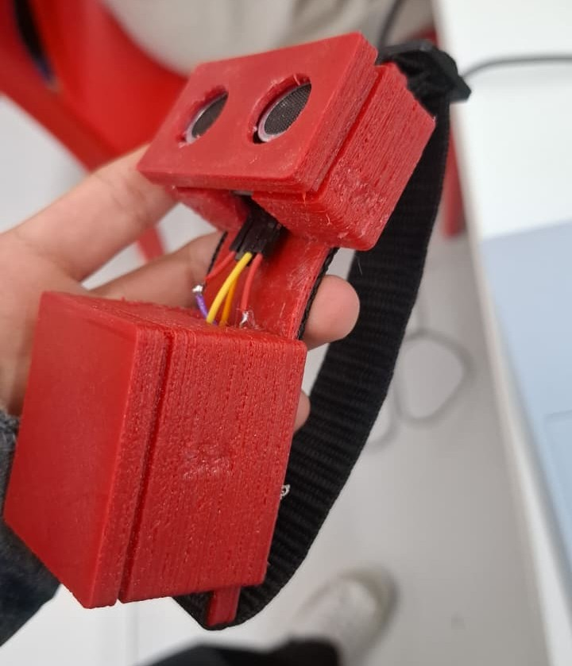
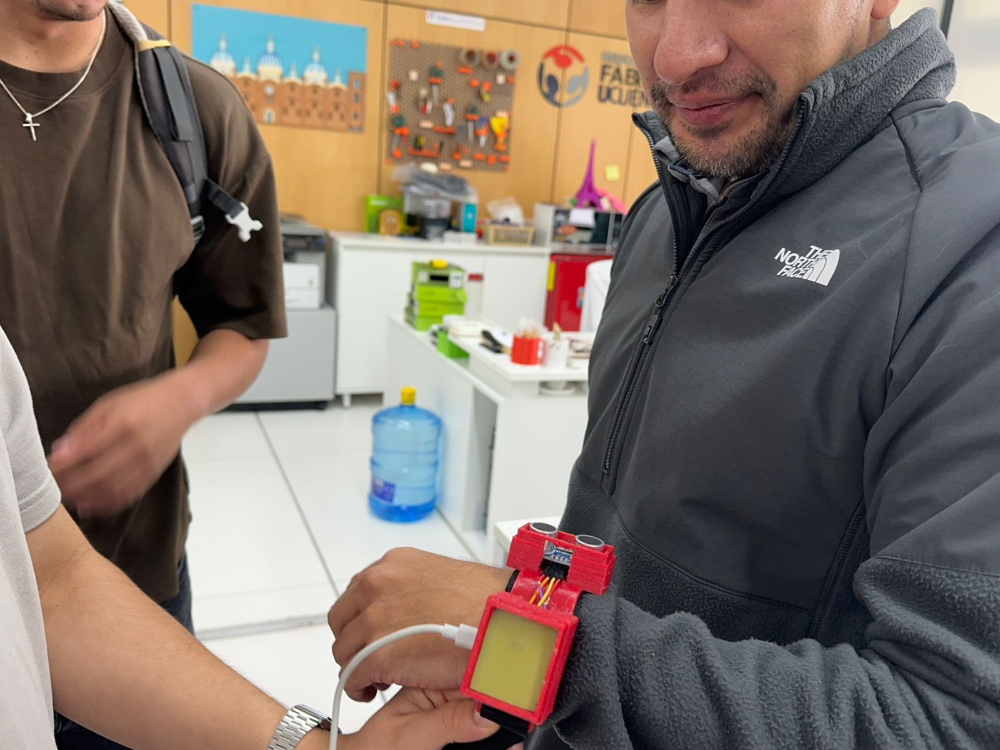
The smart wristband provides a practical technological solution that increases safety and independence for people with visual impairment.
The project successfully integrates electronics, embedded programming, PCB manufacturing, CAD design, 3D printing and IoT technologies into a single functional device.
Following a structured development methodology made it possible to transform user requirements into a reliable functional prototype.
Future versions may include GPS positioning, rechargeable battery management, machine learning algorithms and mobile notifications to further enhance user experience.
The complete documentation and technical files used throughout the development of the Smart Wristband can be downloaded below.
The following video presents the complete development process, prototype assembly and the final operation of the Smart Wristband for People with Visual Impairment.
{kind=link}
{kind=link}